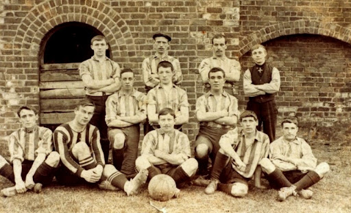
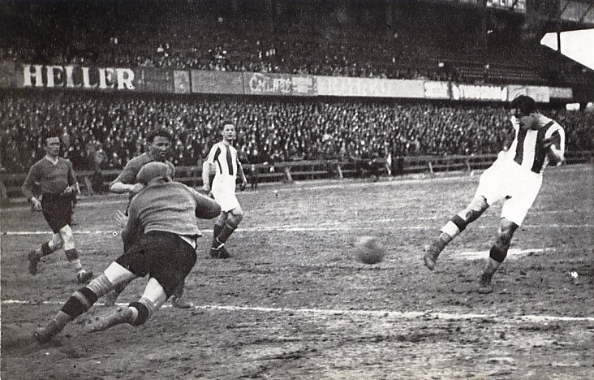

A labdarúgás, vagy futball, őszi gyökerekkel rendelkezik, amelyek egészen az ókori időkig nyúlnak vissza, amikor is hasonló játékokat játszottak már az ókori kultúrákban is. Az modern labdarúgás azonban a 19. században Angliában fejlődött ki, ahol kialakultak az első szabályok és a játék szervezett formája. A sport gyorsan terjedt el Európában, majd világszerte, és mára a legnépszerűbb sportág lett a világon, milliárdok rajonganak érte és űzik világszerte, legyen szó amatőr vagy profi szinten. A FIFA (Nemzetközi Labdarúgó Szövetség) 1904-ben alakult, és azóta felelős a labdarúgás globális irányításáért és szervezéséért.
 